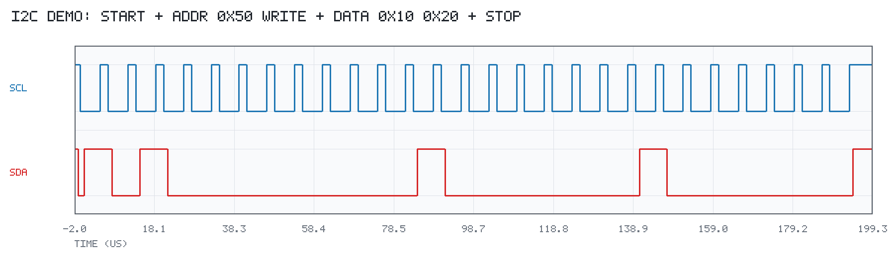
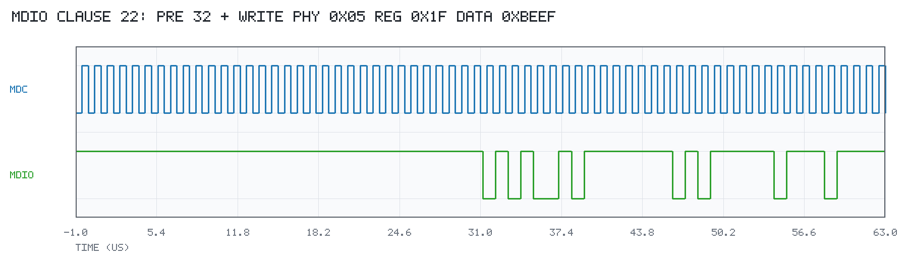
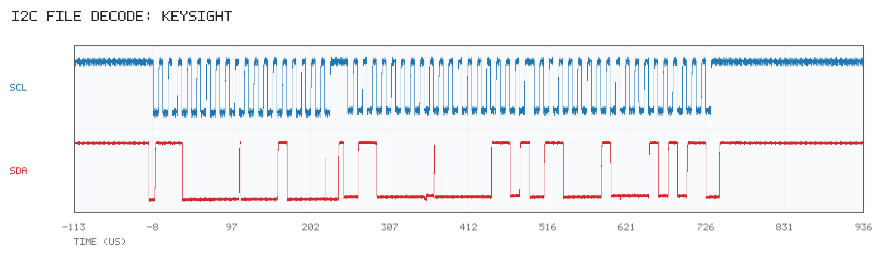
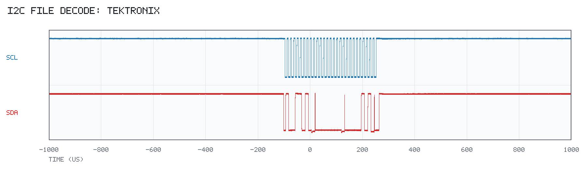

decode 使用文档
github.com/jkbhuan/go-decode 是一个独立、纯 Go 的协议解码与波形接入库。它不连接仪器、 不依赖 VISA，也不负责 JSON 序列化；所有结果都是强类型 Go 结构体。
- 总线：I²C、IEEE 802.3 Clause 22 SMI/MDIO
- 波形来源：调用方内存中的
Waveform、Keysight/Tektronix SCPI、Keysight.bin、Tektronix.wfm - 相关文档：README · 开发报告
目录
1. 模块边界
github.com/jkbhuan/go-decode（Facade：decode.I2C / decode.SMI / 类型别名；无仪器/文件 I/O）
├── core Waveform/Capture/边沿/时序/诊断（不依赖总线/VISA）
├── bus/i2c I²C 7-bit 状态机与时序
├── bus/smi MDIO Clause 22 状态机与时序
├── scope IEEE 488.2 Block 解析（纯数据）
│ ├── keysight preamble、payload、AG10 .bin 解析
│ └── tektronix WFMOutpre、CURVe? payload、WFM#002/#003 .wfm 解析
├── fileio 调用方提供的 io.ReaderAt 格式路由、raw payload
└── compat.go 旧符号转发（Deprecated）
本仓库之外（原工程中的上层程序）：
cmd/keysight-i2c-decode Keysight VISA/SCPI 实时读取 → decode.I2C
cmd/tektronix-i2c-decode Tektronix VISA/SCPI 实时读取 → decode.I2C
wavefile 打开保存文件后交给 fileio 解析依赖方向：fileio → scope/* → core，bus/* → core；core 不导入上层。decode 只接收调用方已经取得的 Waveform、响应字节、payload 或 io.ReaderAt；不打开文件、不创建 VISA Session、不发送任何 SCPI 命令。实时 SCPI 代码没有独立采集包，全部直接写在两个 cmd 示例里，便于逐步看到 Query/WriteString/QueryBinaryBlock 的命令和响应；文件打开在 wavefile。
单位始终是秒和伏特；StartTime 是第 0 个采样点在仪器水平时间轴上的 坐标，不是 Unix 时间戳。Timing.X1/X2 保持绝对仪器时间，不会因裁剪/窗口归零。
2. 内存波形直接解码
import "github.com/jkbhuan/go-decode"
res, err := decode.I2C(scl, sda, decode.I2COptions{
SCLThreshold: decode.LogicThreshold{Low: 0.99, High: 2.31},
SDAThreshold: decode.LogicThreshold{Low: 0.99, High: 2.31},
VDD: 3.3,
})
if err != nil { /* ... */ }
for _, f := range res.Frames {
// f.Address, f.Direction, f.AddressACK, f.Data
}
for _, tm := range res.Timings {
// tm.Name, tm.Value, tm.X1, tm.X2
}
smiRes, err := decode.SMI(mdc, mdio, decode.SMIOptions{
MDCThreshold: decode.LogicThreshold{Low: 0.8, High: 2.0},
MDIOThreshold: decode.LogicThreshold{Low: 0.8, High: 2.0},
TimingThreshold: &decode.LogicThreshold{Low: 0.8, High: 2.0},
})decode.DecodeI2C / decode.DecodeSMI 仍保留为 Deprecated 转发；新代码用 decode.I2C / decode.SMI。总线包也可直接调用： i2c.Decode(scl, sda, i2c.Options{...})、smi.Decode(mdc, mdio, smi.Options{...})。
3. Keysight SCPI 完整示例
cmd/keysight-i2c-decode 演示完整流程：cmd 打开 go-visa Session，直接使用 Query / WriteString / QueryBinaryBlock 读取 CHAN1/CHAN2，打印每条 SCPI 命令和响应，然后交给 decode.I2C 解码并保存 PNG。实时读取代码全部在该 cmd 中，没有独立的公共采集包；decode 只接收已经取得的波形。
运行命令：
go run ./cmd/keysight-i2c-decode \
-addr 10.42.71.194 \
-window-start 1.25e-3 -window-duration 200e-6 \
-logic-low 0.99 -logic-high 2.31 -vdd 3.3示例直接发送并记录以下命令：
*IDN?，根据返回的型号区分 Infiniium / InfiniiVision；:STOP和*OPC?（仅-freeze=true）；:WAVeform:FORMat WORD、:WAVeform:BYTEorder LSBFirst；:WAVeform:SOURce CHAN1/CHAN2；:WAVeform:PREamble?、:WAVeform:POINts?、:WAVeform:DATA?；- 窗口使用 1-based
:WAVeform:DATA? start,size并修正XOrigin； -restore=true时读取前保存并恢复源/格式/字节序/unsigned。
输出默认是结构体摘要；-json 只是上层 json.Marshal 演示。
完整流程（所有仪器代码都在 cmd/keysight-i2c-decode/main.go；下面只展示关键步骤）：
// 1. cmd 打开 VISA Session，decode 不参与
s, err := visa.Open(ctx, "TCPIP0::10.42.71.194::hislip0::INSTR",
visa.WithTimeout(timeout),
visa.WithMaxReadBytes(maxResponse),
)
if err != nil {
log.Fatal(err)
}
defer s.Close()
// 2. 直接使用 Session.Query / WriteString / QueryBinaryBlock
idn, _ := s.Query(ctx, "*IDN?")
fmt.Println("RX *IDN?", idn)
s.WriteString(ctx, ":STOP")
s.WriteString(ctx, ":WAVeform:FORMat WORD")
s.WriteString(ctx, ":WAVeform:BYTEorder LSBFirst")
s.WriteString(ctx, ":WAVeform:SOURce CHAN1")
pre, _ := s.Query(ctx, ":WAVeform:PREamble?")
pts, _ := s.Query(ctx, ":WAVeform:POinTS?")
payload, _ := s.QueryBinaryBlock(ctx, ":WAVeform:DATA?")
// 3. 复用 decode/scope/keysight 的纯像素解析（不发命令）
p, _, _ := keysight.ParsePreamble(stripHeader(pre))
scl, _ := keysight.FormatWaveform(payload, p,
keysight.SampleEncoding{BytesPerPoint: 2, Signed: true, ByteOrder: "LSBF"})
_ = pts
// CHAN2 重复上面的 SOURce/PREamble/POinTS/DATA?，得到 sda
// 4. 纯解码：只接收已经取得的 Waveform
res, err := decode.I2C(scl, sda, decode.I2COptions{
SCLThreshold: decode.LogicThreshold{Low: 0.99, High: 2.31},
SDAThreshold: decode.LogicThreshold{Low: 0.99, High: 2.31},
VDD: 3.3,
})完整示例还包含：*IDN? 型号识别、读取前保存并恢复 :WAVeform:SOURce/FORMat/BYTEorder/UNSigned、可选窗口 :WAVeform:DATA? start,size、点数和响应长度保护、PNG 输出和 JSON 输出。 运行时 stderr 会打印每一步：
SCPI TX *IDN?
SCPI RX KEYSIGHT TECHNOLOGIES,MXR604A,...
SCPI TX :WAVeform:SOURce CHAN1
SCPI TX :WAVeform:PREamble?
SCPI RX +2.00000000E+00,...
SCPI TX :WAVeform:DATA?
SCPI RX <binary block 80000000 bytes; head=...>4. Tektronix SCPI
泰克 4/5/6-Series MSO 使用 TCPIP0::<addr>::inst0::INSTR 连接。完整示例是 cmd/tektronix-i2c-decode/main.go，所有实时代码都写在这个 cmd 里，直接调用 go-visa 的 Query、WriteString、QueryBinaryBlock，并打印每条命令和响应。
go run ./cmd/tektronix-i2c-decode \
-addr 192.168.1.100 \
-scl-channel CH1 -sda-channel CH2 \
-logic-low 0.99 -logic-high 2.31 -vdd 3.3命令顺序依据 4-5-6-Series-MSO_Programmer.pdf 的 “Transferring waveform data from the instrument”：
:DATa:SOUrce选择波形源；:DATa:ENCdg SRIbinary指定有符号整数、小端；:DATa:WIDth 2指定每点 2 字节；:HORizontal:RECOrdlength?获取记录长度，:DATa:STARt 1/:DATa:STOP <record>指定完整范围，再用:WFMOutpre:NR_Pt?确认点数；:WFMOutpre?获取缩放和时间轴参数；:CURVe?传输数据。
关键代码：
s, err := visa.Open(ctx, "TCPIP0::192.168.1.100::inst0::INSTR",
visa.WithTimeout(timeout),
visa.WithMaxReadBytes(maxResponse),
)
if err != nil {
log.Fatal(err)
}
defer s.Close()
idn, _ := s.Query(ctx, "*IDN?")
fmt.Println("RX *IDN?", idn) // TEKTRONIX,MSO64B,...
s.WriteString(ctx, "ACQuire:STATE STOP")
s.Query(ctx, "*OPC?")
s.WriteString(ctx, ":DATa:SOUrce CH1")
s.WriteString(ctx, ":DATa:ENCdg SRIbinary")
s.WriteString(ctx, ":DATa:WIDth 2")
record, _ := s.Query(ctx, ":HORizontal:RECOrdlength?")
s.WriteString(ctx, ":DATa:STARt 1")
s.WriteString(ctx, fmt.Sprintf(":DATa:STOP %s", stripHeader(record)))
nr, _ := s.Query(ctx, ":WFMOutpre:NR_Pt?") // 确认实际传输点数
pre, _ := s.Query(ctx, ":WFMOutpre?")
payload, _ := s.QueryBinaryBlock(ctx, ":CURVe?")
p, _ := tektronix.ParseWFMOutpre(pre)
enc, _ := p.EncodingSpec()
w, _ := tektronix.FormatWaveform(payload, p, enc)换算公式：
V = ((raw - YOff) * YMult) + YZero
t = XZero + (i - PTOffset) * XIncrCH2 重复同样的 :DATa:SOUrce 到 :CURVe? 流程。采集结束后示例会恢复 :DATa:SOUrce、:DATa:ENCdg、:DATa:WIDth、:DATa:STARt、:DATa:STOP。运行输出同样会逐条显示：
SCPI TX *IDN?
SCPI RX TEKTRONIX,MSO64B,...
SCPI TX ACQuire:STATE STOP
SCPI TX :DATa:SOUrce CH1
SCPI TX :DATa:ENCdg SRIbinary
SCPI TX :DATa:WIDth 2
SCPI TX :HORizontal:RECOrdlength?
SCPI RX 3125000
SCPI TX :DATa:STARt 1
SCPI TX :DATa:STOP 3125000
SCPI TX :WFMOutpre:NR_Pt?
SCPI RX 3125000
SCPI TX :WFMOutpre?
SCPI RX :WFMOUTPRE:BYT_NR 2;...
SCPI TX :CURVe?
SCPI RX <binary block 6250000 bytes; head=...>本轮实时路径不做窗口下载；需要窗口时请修改示例中的 :DATa:STARt / :DATa:STOP 并自行处理时间轴。无泰克实机，实时命令序列已按手册实现并通过编译检查，尚未做实机验收。
5. 保存文件与 raw payload
// 打开文件属于 wavefile（decode 之外）。
cap, err := wavefile.Open("capture.bin", fileio.Options{
MaxBytes: 512 << 20, MaxPoints: 10_000_000, ChannelHint: "CH1",
})
w1, ok := cap.Channel("Channel 1", 0)wavefile.Open 打开文件后调用 fileio.Read；后者只在调用方提供的 io.ReaderAt 上按文件头路由，不依赖扩展名，也不打开文件：
| 文件 | 状态 |
|---|---|
Keysight .bin（AG10，normal float32） | 支持多 waveform/segment，Peak/数字 buffer 明确拒绝 |
Tektronix .wfm（WFM#002/#003，normal YT） | 支持 LE/BE、有效采样区；FastFrame/envelope 明确拒绝 |
Keysight 原生 .wfm | 明确 unsupported，不猜测 |
| Tektronix CSV | 本轮未实现 |
原始 SCPI .bin | fileio.Read 明确拒绝；必须 fileio.ReadRaw |
// 原始负载没有可信的 Preamble/编码，必须显式提供。
cap, err := fileio.ReadRaw(payload, fileio.RawMetadata{
Preamble: keysight.Preamble{XIncrement: 1e-9, XOrigin: 0, YIncrement: 1e-3},
Encoding: keysight.SampleEncoding{BytesPerPoint: 2, Signed: true, ByteOrder: "little"},
Channel: "CH1",
})命令行文件分析：
go run ./cmd/decode-file -file capture.bin -ch1 "Channel 1" -ch2 "Channel 2" -protocol i2c
go run ./cmd/decode-file -file scl.wfm -file2 sda.wfm -ch1 CH1 -ch2 CH2 -protocol i2c5.1 生产文件 → I²C 时序与 PNG
cmd/i2c-file-decode 是面向已保存文件的完整示例：分别传入 SCL/SDA 文件， 打印事务、帧、字节和每个时序候选（值、X1、X2、byte/bit/phase），并用 Go 标准库渲染 PNG。该命令不需要 VISA 或仪器连接；wavefile.Open 负责打开文件，fileio.Read 只在取到的数据流上识别格式。
# Keysight MXR604A AG10 .bin（每通道一个文件，标签 Channel 1/Channel 2）
go run ./cmd/i2c-file-decode \
-scl "生产环境测试/i2c-keysight/scl.bin" \
-sda "生产环境测试/i2c-keysight/sda.bin" \
-png docs/images/keysight_bin_i2c.png
# Tektronix WFM#003 .wfm（每通道一个文件）
go run ./cmd/i2c-file-decode \
-scl "生产环境测试/i2c-tek/scl.wfm" \
-sda "生产环境测试/i2c-tek/sda.wfm" \
-scl-channel CH1 -sda-channel CH2 \
-png docs/images/tektronix_wfm_i2c.png真实样例结果：
| 样例 | 解码结果 |
|---|---|
Keysight scl.bin / sda.bin | 2 transactions、3 frames：0x70 write 0x08、0x30 write 0x03、0x30 read 0x15（NACK）；159 timings |
Tektronix scl.wfm / sda.wfm | 1 transaction、1 frame：0x4D write，数据 0x00 0x05；81 timings |
常用参数：-scl-channel（默认 Channel 1）、-sda-channel（默认 Channel 2）、-logic-low 0.99、-logic-high 2.31、-vdd 3.3（设 0 关闭 I²C 时序）、-segment、-max-points、-png（空字符串关闭）。 对于单通道文件（例如泰克每通道一个 .wfm），如果标签不匹配，程序会回退到该 segment 的唯一记录，因此 CH1/CH2 只是标签提示，不改变文件路由。
6. 强类型结果
type I2CResult struct {
Transactions []I2CTransaction
Frames []I2CFrame
Timings []Timing
SCLFrequencies []FrequencyMeasurement
Diagnostics []Diagnostic
}
type I2CFrame struct {
TransactionIndex int
Address uint16
AddressBits uint8
Direction Direction
AddressACK ACKStatus
Data []I2CByte
Start float64
End float64
HasStop bool
RepeatedStart bool
Complete bool
}
type SMIResult struct {
Frames []SMIFrame
Timings []Timing
Diagnostics []Diagnostic
}
type Timing struct {
Name TimingName
Value float64 // 秒
X1 float64 // 秒
X2 float64 // 秒
TransactionIndex int
FrameIndex int
ByteIndex int
BitIndex int
Phase string
Direction Direction
}res.Frames、res.Timings是直接可遍历的强类型视图；I²C 的TransactionIndex指回Transactions，SMI 的FrameIndex指回Frames。Value == X2-X1；Value=0合法；未测到的指标以缺失 Timing + Diagnostic 表示。Direction/ACKStatus/ValidationStatus实现String()，可直接打印。- decode 不做 JSON：需要时上层
json.Marshal(res)；自定义字段名请在上层 DTO 转换。
7. 时序选择与光标
tm, ok := decode.SelectTiming(res.Timings, decode.TimingFilter{
Name: decode.TimingSUDAT,
Direction: decode.DirectionWrite,
Phase: "data",
}, decode.SelectMin)
if ok {
// 仪器层用 tm.X1 / tm.X2（秒）设置光标
}SelectFirst 取最早 X1；SelectMin/Max 取最小/最大 Value，并列取最早 X1。 没有候选返回 false。写光标前确认仍是同一采集记录，并按型号核对 :MARKer 命令。
8. 示例波形图


生产环境保存文件解码结果：


示例：
go run ./examples/i2c -png examples/i2c/example_waveform.png
go run ./examples/smi -png examples/smi/example_waveform.png9. 支持矩阵与错误
| 能力 | 状态 |
|---|---|
| I²C/SMI 纯算法 | 已实现、离线验证 |
| Keysight 实时 SCPI | 已实现（cmd/keysight-i2c-decode 直接调用 VISA）；波形换算已在 MXR604A 实机验证 |
| Tektronix 实时 SCPI | 已实现（cmd/tektronix-i2c-decode，inst0::INSTR）；编译通过，无实机 |
| Keysight .bin AG10 | 已实现；真实 scl/sda.bin 解码出 I²C |
| Tektronix .wfm WFM#002/#003 | 已实现；真实 scl/sda.wfm 解码出 I²C |
| Keysight .wfm / Tektronix CSV | 明确不支持/未实现 |
| 原始 SCPI payload | 显式 Preamble+Encoding 后可读，无元数据拒绝 |
常见错误：配置/波形非法返回 error；文件格式/版本/采集类型问题使用 core.ErrUnknownFormat、ErrUnsupportedFormatVersion、 ErrUnsupportedAcquisitionType、ErrFileTooLarge、ErrTooManyPoints，可用 errors.Is 判断。采集截断、协议异常和不可测指标仍用 Diagnostic。
10. 测试与验证状态
go test ./...
go vet ./...
go test -run '^$' -bench . ./...- 真实 Keysight
.bin和 Tektronix.wfm样例已在离线测试中解码出 I²C。 - Keysight MXR604A 的 SCPI 波形换算此前做过实机只读验证；真实 I²C/MDIO 总线 验收仍未进行。
- Tektronix 实时 SCPI 示例按 4/5/6-Series 手册实现并通过编译；未实机。
- FastFrame、Peak/Envelope、Keysight
.wfm、Tektronix CSV 明确未支持。